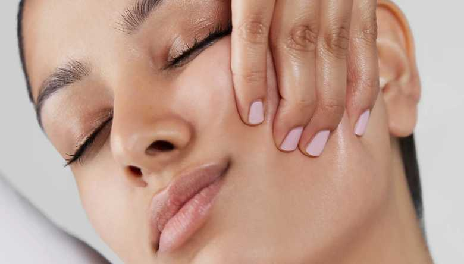

NATURAL AT HOME FACELIFTS TO TONE & TIGHTEN SKIN
Navigating the world of at home skin care is a minefield. With so many new devices and products around, it is hard to know where to begin, and then of course there is the cost to factor in. Whether you’re yearning for a full face sculpt or prefer to focus on key areas like your cheeks, eyes or jaw line, we have some face workout tips that can do the trick whilst at home.
These days we seem to all be after a natural beauty look, as we all embark on getting to know our bare faces, skin-imalism has emerged as the greatest beauty trend of all. Going forward we want to look barefaced, but better. It’s not that we no longer want enhanced cheekbones, in fact “Facial Contouring” searches have gone up by 150%, according to Bobbi Brown. To fill the void of ‘traditional’ sculpt and contouring using makeup, face training is the subtle cult that arises to keep you toned and fresh-face allowing you to maintain definition with or without makeup.
Focusing more on the ideology of a workout rather than a facial, brand FaceGym have taken age-old techniques and formulated moves that lift and contour your face – Almost sounds like a magic trick, but David Blaine is nowhere in sight. Entrepreneur founder Inge Theron of the gym for your face brand, has done us all a solid.
Performing high intensity but non-invasive methods can help your skin care products work for your skin and give you extra definition, serving that envied glow we see on all our favorite models and influencers. Regular facial muscle manipulation on your face improves the blood flow and supplies your skin cells with nutrients, leading to a product of collagen which our skin requires to prevent or reduce the formation of wrinkles.
Benefits Of Facial Exercises
1. Strengthens the muscles in your face
2. Firms and tightens the skin
3. Reduces the appearance of wrinkles
4. Increases blood circulation
5. Releases unwanted tension held in your face and neck
Tips For Doing Facial Exercises The Right Way
1. Performing facial exercises lying down is the most effective – book that 1-2-1 session with your
personal face trainer!
2. Ensure your hands are clean before touching your face.
3. Do your fitness routine at the same time of the day if you can.
4. Combine facial exercises with cardiovascular exercises to give your complexion the best possible
boost.